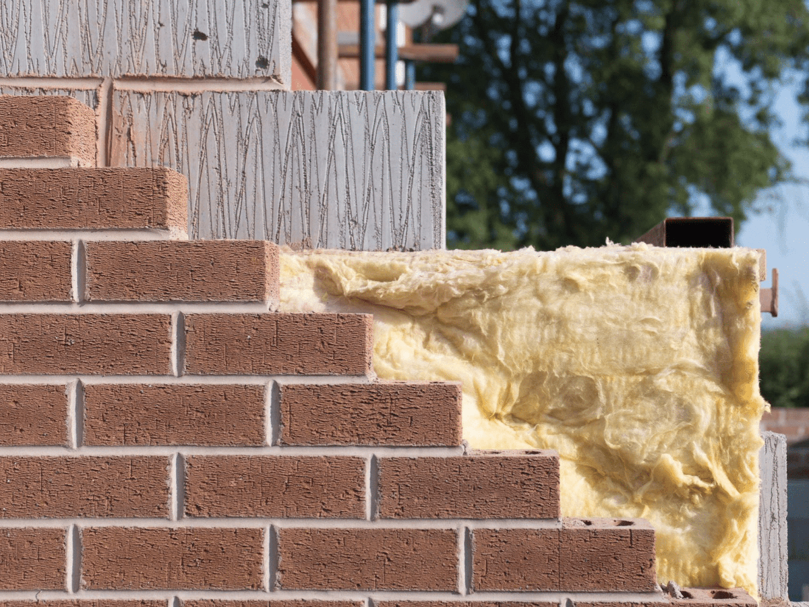
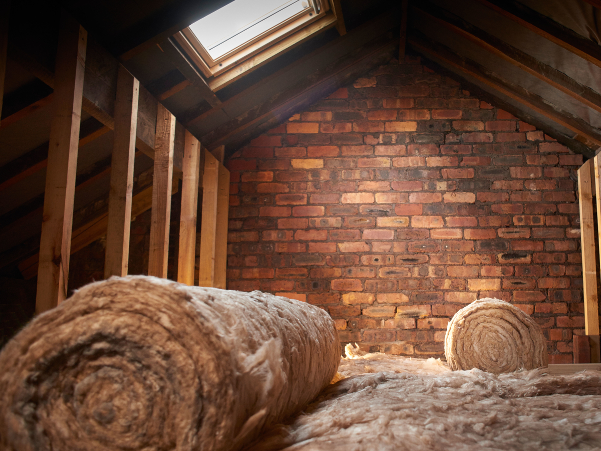
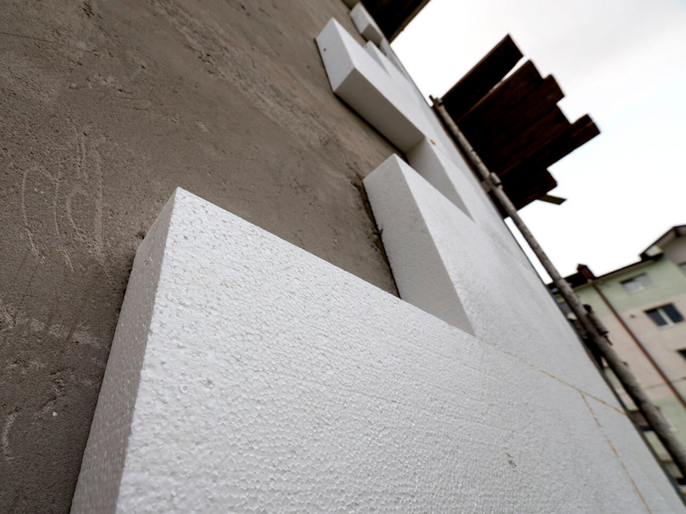
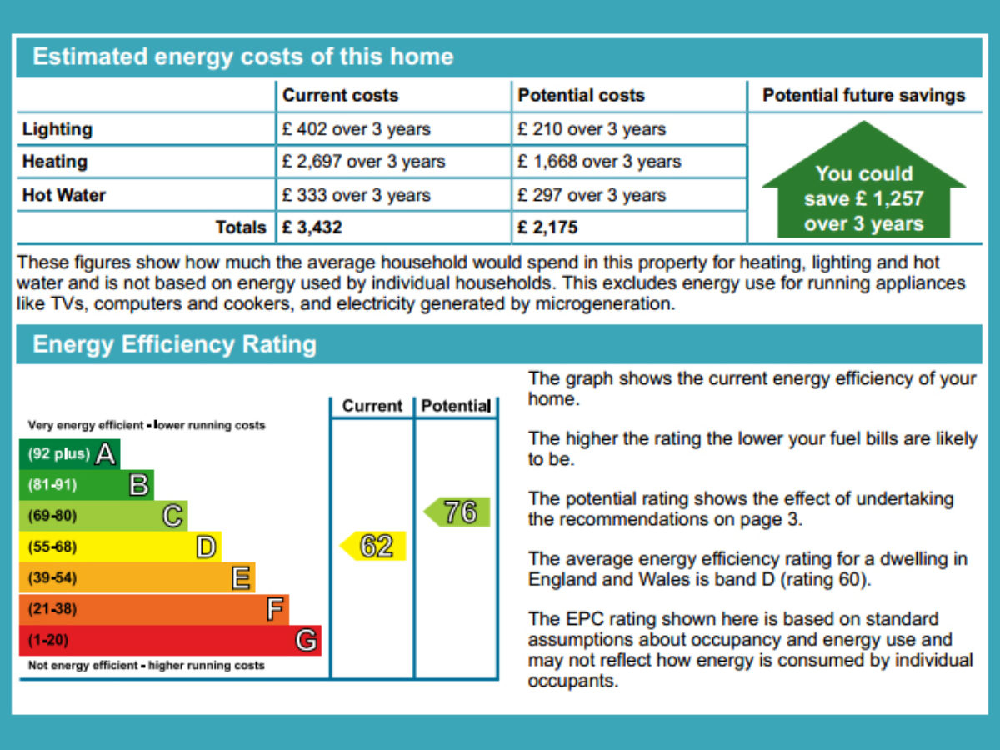
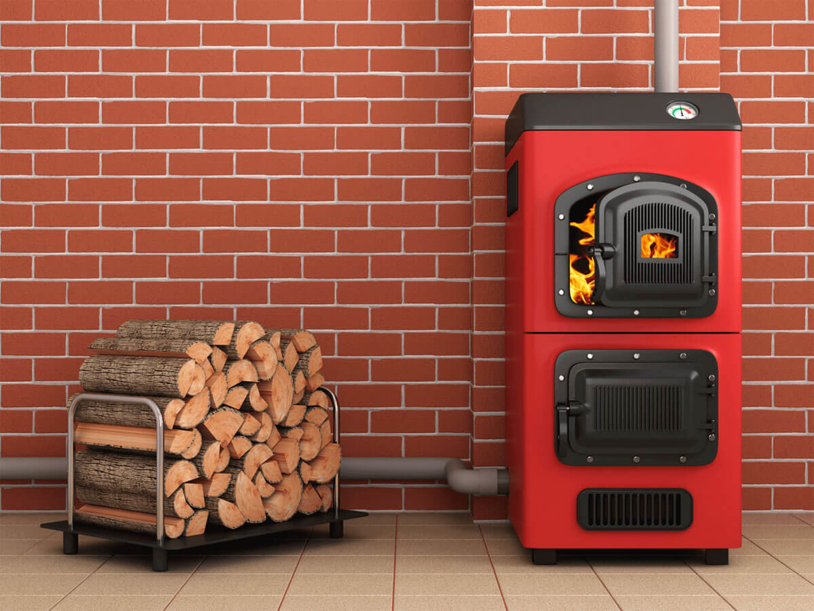
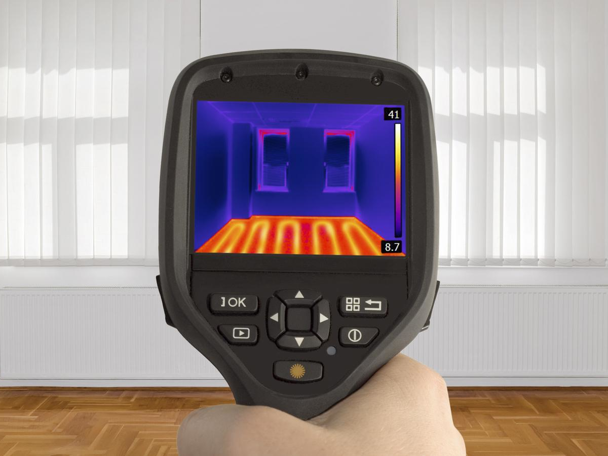

We offer a wide range of insulation solutions and an energy assessment service. Make sure you read below on how we can help you reduce your energy bills!

Cavity Wall Insulation
Insulate the cavity in your walls with fibre or polybead material and significantly reduce your energy bills by up to 20%.
Based on property size and heating most customers will have a payback of between 3 and 5 years.
We have full access to the ECO grants provided by the large energy companies and if you are claiming one of the main states benefits the insulation will be completely free or majority funded.

Loft Insulation
With a quarter of a property’s heat literally going through the roof, topping up the loft insulation to a depth of 300mm can save £200-300 a year.
Consequently, short payback periods makes this measure very cost-effective.
With comprehensive access to the ECO grants, you will receive this insulation free or largely funded if you are claiming one of the listed state benefits.

Solid Wall Insulation
Approximately a third of UK homes have very leaky solid walls which can lose up to 45% of heat.
Insulating these will save many hundreds of pounds every year, depending on property size and configuration.
External insulation systems are available using EPS (expanded polystyrene) or Rockwool and internal insulation systems can be installed using extruded polystyrene or glass wool fibre in a timber frame, both according to property and customer requirements.

Energy Performance Certificates
If you are selling or renting your property then you will legally require an EPC as part of the conveyancing process.
We pride ourselves on qualitative assessments conducted promptly and professionally.
The EPC will demonstrate the overall energy efficiency of a property and recommend where improvements can be made to save energy and reduce costs regardless of who is living there.

Renewable Energy Solutions
To mitigate climate change and achieve carbon emission reduction targets the adoption of renewables are key.
The Boiler Upgrade Scheme which replaced the renewable heat incentive provides upfront capital grants of up to £6k for converting to an air/ground source heat pump or biomass boiler.
A current EPC is required to demonstrate cavity wall and loft insulation have already been installed.
Even without the Feed-in tariff solar PV is still very popular due to affordable installations, smart energy management systems and battery storage integration.

Survey and Assessment
For a survey, quote or confirmation of entitlements to grants/offers get in touch, you may be surprised at how easy and cost-effective our service is.
All insulation materials used conform to industry performance standards and are installed by well established, accredited organisations.
We partner with a number of local, responsible organisations for renewables, glazing, heating, electrical, general building and full retrofits.